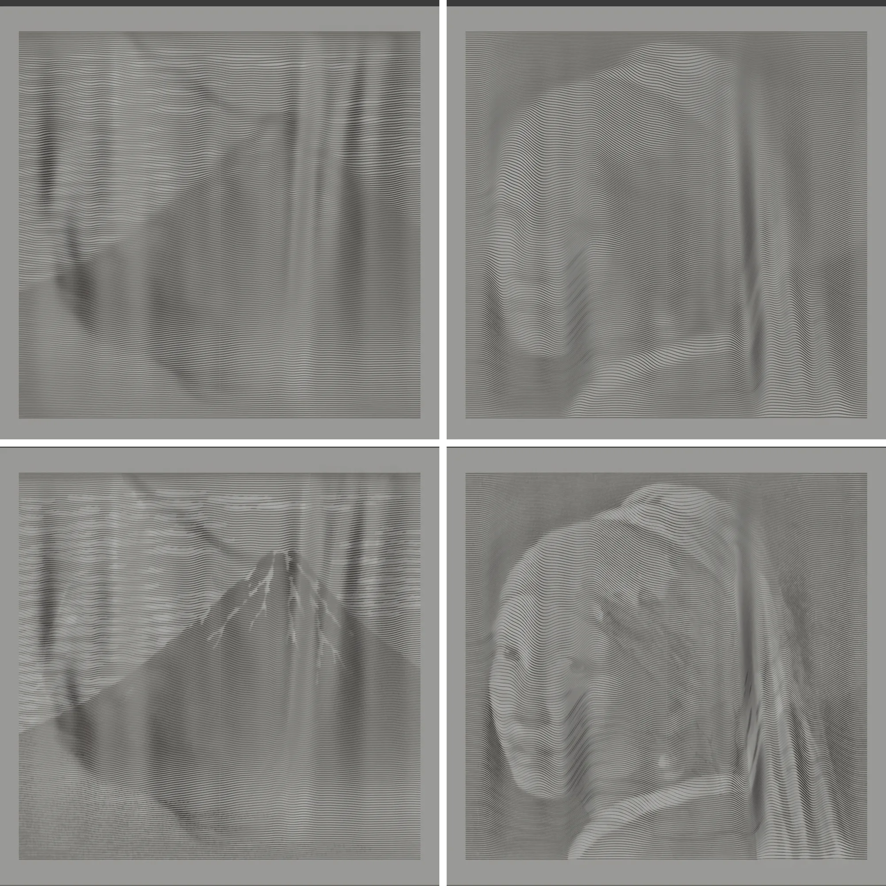
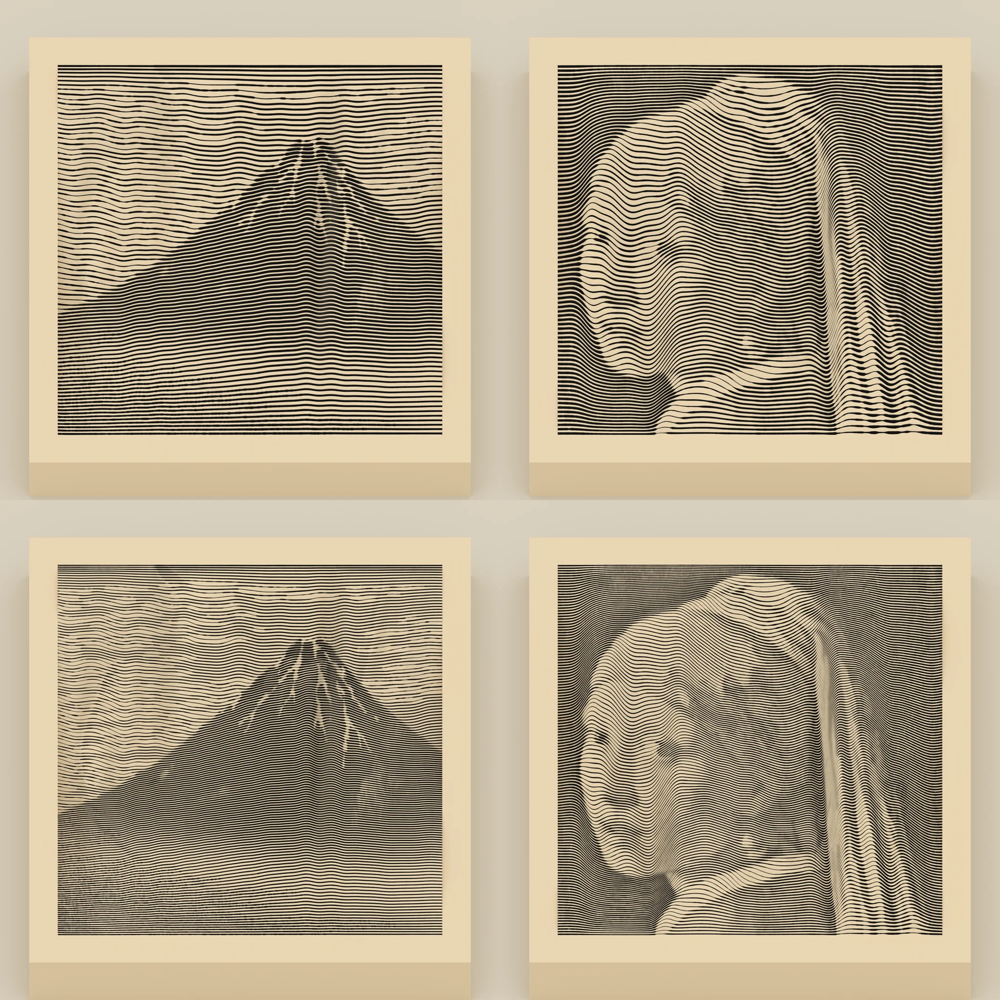

ENGRAVED METAMORPHOSIS · 線刻の変身画
赤富士が、鏡の中で
真珠の耳飾りの少女になる
直方体の上面に細い溝を 190 本彫り、墨を入れただけの立体です。手前から見ると葛飾北斎「凱風快晴」、後ろに立てた鏡の中ではフェルメール「真珠の耳飾りの少女」が、線刻の版画として浮かび上がります。塗りは地色と墨だけで、見る向きによる塗り分けはありません。絵が入れ替わるのは、溝の立体的な形のためです。
家庭用の 3D プリンター（Bambu Lab P1S）で刷れるように最適化した設計です。大きさ 180 × 246 × 30 mm、溝の幅と溝の間の壁の厚さはノズルに合わせてあり、サポートなしで刷れます。造形データはページの下からダウンロードできます。
新作：同じ手法の 2 枚組「星月夜 ⇄ 雷神」「ローヌ川の星月夜 ⇄ 風神」をページの最後に追加しました。鏡の中に、俵屋宗達の風神雷神図屏風が現れます。
一周させて見る
手前から見ると、鏡の中では


鏡を立てて展示すると

作品の奥に鏡を置き、上端を約 3° 手前へ倒します。手前の実物には赤富士、鏡に映った像には少女が見えます。鏡は、反対側からの視点を同時に見せる役目をします。
平らな絵を鏡に映すと、上下逆さに見えるはずです。この作品では、上面の起伏（−14〜+11 mm）がその反転を打ち消し、少女が正立して見えます。裏へ回って直接見ると、少女は正立のまま左右だけ反転しています（上の切り替えボタン）。
15° ごとの見え方

方位 0°
仕組み
1 枚の像には奥行きの情報がない（杉原厚吉「変身立体」）。面上の点を手前と奥から同じ俯角 e で見ると、左右位置 x は共通です（鏡は奥行きだけを反転します）。違うのは上下位置で、手前からは vA、鏡の中では vB になります。溝 1 本ごとに 2 つの絵での位置を別々に決めれば、溝の空間曲線は次の式で一意に決まります。
明暗は、線の粗密と溝の幅で表す。
- 粗密：絵の暗い所ほど溝が詰まるように、各列で線の密度の累積分布を 190 等分して溝を置きます。下から i 本目の溝は、赤富士の中では下から i 番目、少女の中では上から i 番目の位置です。並び順が 2 つの絵で逆なので、溝の間の面の傾きは密度の比で抑えられます。
- 溝の幅：溝の手前の縁と奥の縁にも、それぞれ上の式を当てます。2 つの縁の高さを少し（最大 0.4 mm）変えると、手前から見た溝の幅と、鏡から見た溝の幅を別々に決められます。暗い所ほど溝を太く見せて、目・鼻・口や雪の筋のような細部を出します。片方の絵の幅の違いは、もう片方の絵には映りません。
溝の位置（起伏）は左右になだらかに保ち、細部は溝の幅が受け持ちます。面の傾きは最大 0.75（約 37°）で、45° より緩いので、どちらの視点からも面が面自身を隠しません。見る人は上面を平らだと思い込むので、溝は平らな板に彫られた版画として読まれます。


3D プリンター向けの最適化
家庭用の熱溶解プリンター Bambu Lab P1S（造形エリア 256 × 256 × 256 mm）で刷ることを前提に、形を実寸で設計しています。
- 大きさ：直方体 180 × 246 mm で造形エリアに収まります。絵の部分は、手前からも鏡の中でも 160 mm 角の正方形に見えます。
- 溝と壁の幅：溝の最小幅と、溝の間に残す壁の最小幅をノズルに合わせています。0.2 mm ノズル用は溝 0.35 mm・壁 0.30 mm、標準の 0.4 mm ノズル用は溝 0.50 mm・壁 0.50 mm です。壁は Arachne で 1 本の線として出せる幅です。
- 浅い起伏：濃淡の多くを溝の幅が受け持つので、線の粗密の差を小さくでき、起伏は −14〜+11 mm に収まります。高さは 30 mm で、起伏の陰影がもう一方の絵に透けにくくなります。
- サポート不要：上面はどの点も真上から見える形で、オーバーハングはありません。彫った面を上にして平らに置くだけです。
- スライサーでも読める：溝の幅で細部を出すので、墨を入れる前の形だけの状態でも、陰影で絵が読めます。

どのくらいの角度・距離まで見えるか
設計は「俯角 45°・真正面・平行投影」ですが、角度が少しずれても絵は保たれます。溝の並び順が変わらないので、絵は急に消えず、少しずつ変形するだけだからです。


| 条件 | 見え方 |
|---|---|
| 俯角 38〜60° | どちらの絵もはっきり読める（少し縦に伸び縮みする） |
| 左右 ±15° | 読める（絵が傾き、少し歪む） |
| 左右 ±30° | 読めるが、大きく歪む |
| 俯角 30° | 崩れ始める（面が溝を隠して黒い筋が出る。とくに赤富士） |
| 距離 0.5 m 以上 | 問題なし（線が溶け合って明暗に見えるのは 1〜2 m） |
照明と墨入れ
絵は、溝に入れた墨の黒と、表面の地色の対比でいちばんはっきり出ます。墨を入れる前の形だけの状態でも、溝の幅の違いが陰影になって絵は読めますが、うっすらとしています（下の①②）。
面の高さは、2 つの絵での線の位置の和で決まります。そのため一方の絵に縦の輪郭（富士の稜線や顔の輪郭）があると、その所で面が左右に傾きます。横からの強い光では、この傾きの陰影がもう一方の絵に透けて見えます（④）。


見せるときは、溝に墨を入れ、上から、やわらかく、手前と奥に均等に光を当ててください（大きなディフューザー付きのライト、曇りの日の窓辺など）。スポットライトや横からの強い光は避けます。このページの画像は、特に断りのないものは③の条件（墨あり・やわらかい光、陰影を抑える処理なし）で描いています。
寸法
このページの画像は、0.2 mm ノズル用の版（直方体 180 × 246 × 29.6 mm、絵の部分 160 × 226 mm、溝 190 本・幅 0.35〜0.80 mm・深さ 0.8 mm）を実寸で描いたものです。絵の部分は、どちらから見ても 160 mm 角の正方形に見えます。
3D プリンター用のデータと設定（Bambu Lab P1S）
どちらの版も実寸で設計しています。スライサーで拡大・縮小しないでください。溝の幅がノズルに合わなくなり、錯視も崩れます。別売の 0.2 mm ノズル用（溝 190 本）のほうが線が細かく、少女の顔がはっきり出ます。標準の 0.4 mm ノズル用（溝 140 本）でも目・鼻・唇・真珠は読めますが、やや粗くなります。
材料を白のマット PLAにすると、墨の線との対比が大きくなります。

| 0.2 mm ノズル用 | 0.4 mm ノズル用（標準） | |
|---|---|---|
| 大きさ | 180 × 246 × 29.6 mm | 180 × 246 × 25.7 mm |
| 溝 | 190 本・幅 0.35〜0.80・深さ 0.8 mm | 140 本・幅 0.50〜1.08・深さ 1.0 mm |
| 溝の間の壁（最小） | 0.30 mm | 0.50 mm |
| 起伏 | −14 〜 +11 mm | −12 〜 +9 mm |
| 積層ピッチ | 0.08 mm | 0.12 mm |
| 壁生成・壁の本数 | Arachne（既定）・2 | |
| インフィル | 10〜15 % | |
| サポート・ブリム | 不要（反る場合のみブリム） | |
| 材料 | 白のマット PLA（木地色・ベージュも可） | |
- 置き方：彫った面を上にして平らに置き、長い辺（246 mm）をベッドの前後方向に合わせます。
- 積層の筋：緩い斜面には、積層の段差が等高線のような筋になって出ます。可変積層ピッチで上面付近を細かくすると目立ちにくくなります。
- 墨入れ：造形後、溝に黒のアクリル絵の具（または墨）を流し込み、乾く前に固く絞った布で表面を拭き取ります。溝の中だけが黒く残ります。
- 確認してほしいこと：造形時間と材料の量は、作者の環境ではスライスして確かめていません。実物もまだ刷っていません。刷る前に Bambu Studio で確認し、初めての場合は絵の一部を 50 mm 角ほど切り出して試し刷りすると安全です。
NEW · 第 3 弾
2 枚組「星月夜 ⇄ 雷神」「ローヌ川の星月夜 ⇄ 風神」
同じ変身立体の原理で作った 2 枚組です。左に置く 1 枚は手前から見るとゴッホ「星月夜」、右に置く 1 枚は「ローヌ川の星月夜」。2 枚を並べて奥に鏡を立てると、鏡の中には俵屋宗達「風神雷神図屏風」の雷神（左）と風神（右）が、元の屏風と同じ並びで現れます。鏡は奥行きだけを反転するので、左右は入れ替わりません。


赤富士の版と違い、溝は等間隔で、上面の起伏はほぼありません（±0.2 mm）。明暗は、溝と溝の間の面の「見かけの幅」だけで描きます。面の手前の縁と奥の縁の高さを少し変えると、手前での見かけの幅と鏡での見かけの幅を別々に決められるので、片方の絵がもう一方に透けません。色と筆のタッチで描かれた星月夜の渦や星も、この方式で出せるようになりました。厚さ 5 mm の薄い板なので、刷る時間も 1 枚約 4 時間半（0.4 mm ノズル・単色）で済みます。
| 0.4 mm ノズル用（標準） | 0.2 mm ノズル用 | |
|---|---|---|
| 大きさ（1 枚） | 215.7 × 239.1 × 5.2 mm | 215.7 × 239.1 × 4.9 mm |
| 絵の部分（見かけ） | 206 × 162 mm | |
| 溝 | 119 本・等間隔・深さ 1.0 mm | 198 本・等間隔・深さ 0.8 mm |
| 最も細い溝 / 溝の間の面 | 0.50 mm / 0.53 mm | 0.35 mm / 0.31 mm |
| 工程・積層ピッチ | 0.12mm Fine・0.12 mm | 0.08mm High Quality・0.08 mm |
| 造形時間の目安（1 枚） | 単色 約 4.6 時間、AMS 2 色 約 8〜9 時間 | 単色 約 24 時間 |
| 設定 | Arachne・インフィル 15 %・サポートなし・外側ブリム 3 mm（単色）・明るい色のマット PLA | |
- 実寸で設計しています。スライサーで拡大・縮小しないでください。
- 置き方：彫った面を上にして平らに置きます。板は台いっぱいなので、台の左手前の使えない区画にかからないよう、中央より右に寄せます（Bambu Studio 用のプロジェクトはその位置に置いてあります）。
- AMS で 2 色に刷る場合：プロジェクト 3MF を開くと、溝が黒・地がベージュに塗られています。そのままスライスでき、墨入れが要りません。単色で刷った場合は、赤富士の版と同じく溝に墨を入れます。
- 確認してほしいこと：Bambu Studio でスライスして警告が出ないこと、G-code 上で溝がふさがらないことは確かめましたが、実物はまだ刷っていません。